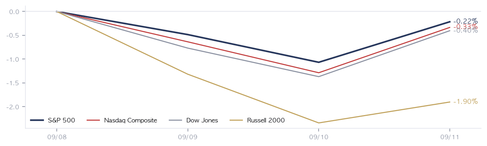
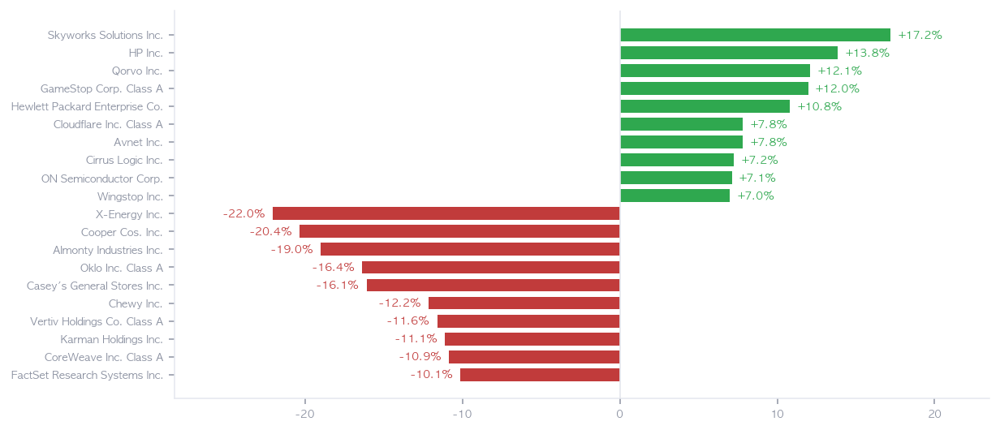
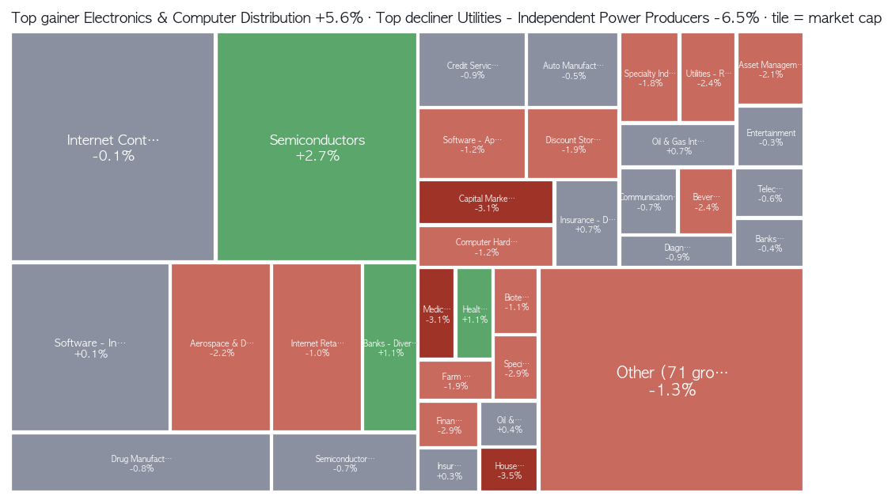
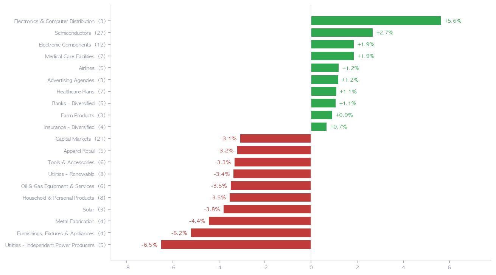
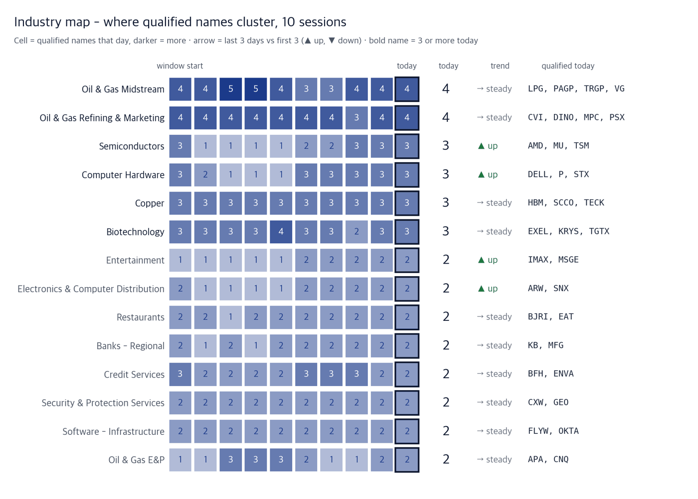
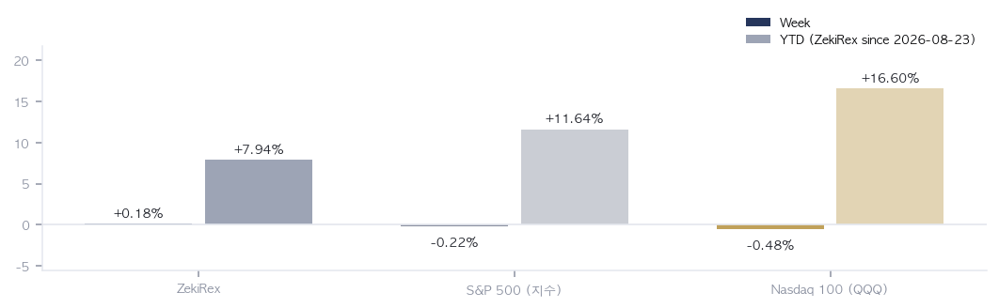

|
ZekiRex™ Apex US Weekly 9/7~9/11
What the week left · 1/2
data as of the 9/11 close |
ZekiRex™ |
|
|
| • | Composition change The model portfolio was replaced in full by the top four ranked candidates at equal weight, filled at the New York 9/11 close. | | • | Performance table The table and charts record the previous composition. The new one starts counting next week. |
| |
The week in one sentence. Read only the index and nothing happened. Underneath it, the cost of oil and the cost of money rose together. Crude passed $100 on Tuesday and rose further on Thursday. The 30-year Treasury yield reached its highest level in 18 years. Raw materials and money got more expensive in the same week. New York fell for four straight sessions into Thursday. On Friday the August consumer price index came in at 3.4%, matching expectations, crude stepped back and stocks rose. (Edaily, Bloomberg, Investor's Business Daily) The ground under that rebound weakened after the close, when Saudi Arabia shut the East-West pipeline it had built to bypass the Strait of Hormuz. |
| The five things that mattered this week | The five events of the week that touched money. Each one runs: what happened, why, and what it means. | 1 | Crude through $100, and $107 on Thursday FACT WTI crude rose 7.55% on the week and finished at $100.1. Brent stood at $107.6 at the New York 9/10 close. Both grades stepped back on Friday. WHY Energy groups barely moved with it. Refining and marketing added 0.30% and integrated oil 0.67%, while oil and gas equipment fell 3.48%. The market read this crude price as a shock to absorb, not as earnings to buy. ACTION — Buying energy because crude is up was not supported by this week's prices. If you hold oil-linked names, the refining margin and the demand numbers matter more right now than the crude price itself. | | 2 | The 30-year at 5.35%, an 18-year high FACT The 30-year Treasury yield passed 5.35%, its highest in 18 years (Money Today). The 10-year rose 0.17 percentage point on the week to 4.97%. WHY The further into the future a company's profits sit, the more its price depends on the discount rate. That is where independent power producers fell 6.50% this week, and solar 3.79%. ACTION — The AI-power theme hangs on rates, not on oil. Oklo (OKLO) fell 16.37% and X-Energy (XE) 22.04%. If you hold this theme, the direction of long-dated yields matters more than the next power-demand headline. | | 3 | August CPI at 3.4%, with core above forecast FACT August consumer prices rose from a year earlier, matching expectations, Chosun Ilbo reported, while Dong-A Ilbo noted the core measure ran above forecast. WHY The headline number reassured and the core number said the opposite; CBS News noted the odds of a move this month rose rather than fell. Friday's rebound rests on a single print. ACTION — What one number gave, the next number can take back. If you hold growth names, adding size before the Federal Reserve meets is a bet on what the meeting says. | | 4 | Index -0.22%, average stock -1.2%: what the index hid FACT The S&P 500 fell 0.22% across four sessions. The 1,033 names that traded every one of them averaged -1.2%, and the Russell 2000 fell 1.90%. WHY The index is carried by its largest members. Semiconductors rose 2.67% this week and held it up, while the smaller names underneath had a different week entirely. ACTION — Judging the week by the index alone will not match what your account did. If what you hold is not a large index name, your week probably looked like the average, not like the benchmark. | | 5 | Saudi Arabia shuts the East-West pipeline FACT Saudi Arabia halted its East-West pipeline after a drone attack launched from Iraq, the BBC and the Guardian reported, and Yemen's Houthis captured an island in the Red Sea. WHY The pipeline exists precisely to skip the Strait of Hormuz, the South China Morning Post noted, so the fallback for a blocked strait has itself closed first. ACTION — Friday's rebound assumed crude had stepped back, and that assumption weakened over the weekend. If your account carries heavy energy exposure, the crude price may set the tone early next week before any data does. |
|
| The week, closed | | READING | FRIDAY CLOSE | WEEK | YTD | | S&P 500 | 7,657 | -0.22% | +11.64% | | Nasdaq Composite | 26,333 | -0.33% | +13.33% | | Dow Jones | 52,573 | -0.40% | +8.66% | | Russell 2000 | 2,904 | -1.90% | +15.78% | | Bitcoin | $77,209 | -2.38% | -12.99% | | Dollar Index | 99.1 | +0.28% | +0.71% | | UST 10-Year | 4.97% | +0.17%p | +0.79%p | | WTI Crude | $100.1 | +7.55% | +74.55% | | Gold | $4,366 | -0.63% | +1.20% |
Weekly moves run from the New York 9/8 close to the New York 9/11 close, four sessions; 9/7 was the Labor Day holiday. The year-to-date column is measured from the same close series. All four indexes fell, but not by the same amount: the Russell 2000 lost 1.90% against the S&P 500's 0.22%, which says smaller companies carried more of the rate burden. Crude rose 7.55% while gold slipped 0.63% - gold falling in a week of rising geopolitical risk is what higher real yields look like. Bitcoin fell 2.38% and is down 12.99% year to date. |
| What moved | 1033 measured of 1039 tracked - full-week traded names only Best of the week | SWKS SWKS | +17.21% | | HPQ HPQ | +13.83% | | QRVO QRVO | +12.09% | | GME GME | +11.96% | | HPE HPE | +10.82% | | NET NET | +7.82% | | AVT AVT | +7.80% | | CRUS CRUS | +7.25% | | ON ON | +7.12% | | WING WING | +6.99% |
| Worst of the week | XE XE | -22.04% | | COO COO | -20.36% | | ALM ALM | -18.99% | | OKLO OKLO | -16.37% | | CASY CASY | -16.09% | | CHWY CHWY | -12.16% | | VRT VRT | -11.61% | | KRMN KRMN | -11.11% | | CRWV CRWV | -10.86% | | FDS FDS | -10.13% |
|
Best and worst on New York 9/8-9/11 closes, restricted to the 1,033 names that traded every session. The upside is a queue of chips and computer hardware: Skyworks (SWKS) 17.21%, HP (HPQ) 13.83%, Qorvo (QRVO) 12.09%, HPE (HPE) 10.82%. The downside is nuclear and power: X-Energy (XE) -22.04%, Cooper (COO) -20.36%, Almonty (ALM) -18.99%, Oklo (OKLO) -16.37%. In one week the companies that build the machines rose and the companies that sell the electricity fell. |
| Our week | | NAME | FRIDAY | WEEK | OPEN P/L | STOP | RISK BUFFER | NEXT | | PACS PACS | $44.76 | — | +0.00% | $41.18 | +8.7% | ER 11/9 | | STX STX | $830.17 | — | +0.00% | $763.76 | +8.7% | ER 10/27 | | MU MU | $975.26 | -2.50% | +0.84% | $889.72 | +9.6% | ER 9/30 | | DELL DELL | $567.29 | +6.26% | +28.32% | $406.71 | +39.5% | ER 11/27 |
The book was replaced in full this week. We hold the top four names from the candidate ranking our rules produce every day, and when a seat opens it goes to the next name in that order. No person picks the stocks. In: PACS Group (PACS, skilled nursing) and Seagate (STX, storage). Out: ASML (ASML) and Marathon Petroleum (MPC). Micron (MU, memory) and Dell Technologies (DELL, servers and hardware) stayed, with only the share counts adjusted. Fills are recorded at the New York 9/11 close, which is why the weekly column in the table is empty. The stop sits 8% below the fill, and falling in the ranking is not a reason to sell. Dell rose 11% on Friday to a record, with an AI server backlog of $95 billion (CNBC, MarketWatch). The other side belongs here too: Nikkei Asia reported China's CXMT overtaking Micron on memory profit margin. Three of the four names are memory, servers and storage, tied to one stream of demand - if chips and hardware roll over together, three positions stop out together. |
|
|
What next week needs · 2/2
data as of the 9/11 close |
ZekiRex™ |
|
|
| Also worth knowing | | Nvidia in talks to invest in Anthropic's listing · The Straits Times and Channel NewsAsia, citing sources, reported Nvidia is in talks to invest in Anthropic's large public offering. (The Straits Times · Channel NewsAsia) → It extends the pattern of the chip seller holding equity in the buyer, which is worth weighing when reading demand figures in this field. | | White House weighs the Defense Production Act on refining · Reuters, citing sources, reported the White House is weighing how it could use the Defense Production Act to expand US refining capacity. (Reuters) → Capacity takes years to add, so it does not reach today's price, but it signals the government does not read this episode as temporary. | | US consumer sentiment near a record low on fuel costs · Money Today reported US consumer sentiment falling to its second-lowest reading on record under fuel costs, and Edaily reported homebuilders falling across the board as mortgage rates passed 7%. (Money Today · Edaily) → Pumps and mortgages move later than the indicators, so these two lines record that the week's shock did not stay inside the market. | | Dell and HPE lead the S&P 500 higher on Friday · MarketWatch reported Dell and HPE as the two best-performing names in the S&P 500 on Friday, and Edaily reported RBC Capital projecting a further 26% upside for Dell. (MarketWatch · Edaily) → Dell is one of the names the book kept in this week's replacement, making it a read on whether enterprise hardware demand moves separately from the rate shock. | | Twenty-five outlets were read for the week, from 22 independent publishers. Where an item rests on a single source, that outlet is named in the line. |
| Korea and the US: Seen from New York, Seoul took the same shock through a different channel this week. The 3-year Korean government bond yield crossed 4% for the first time in 34 months and the KOSPI fell back below 7000 (MK Markets, Kyunghyang). Korea's president said there was no need to worry because the country is widening where it buys crude (Yonhap). What matters for a US reader is not whether he is right, but that news from the strait reaches Seoul through a currency and a policy rate first. That makes the won and Korean bonds the first place this story gets priced next week. |
 Five lines: the four indexes and Bitcoin, rebased to 100 at the New York 9/8 close. Two closing points make it a quiet week; the path shows a slide into Thursday and a Friday recovery. The Russell 2000 line sits lowest throughout - what it looks like when rates set direction. |
 Ten up and ten down among the 1,033 names that traded all four sessions; the full list averaged below -1%. The top is a run of chips and computer hardware, the bottom a cluster of nuclear and power generation. What separated them was sensitivity to the discount rate, not sector character. |
 Tile size is the industry's market value; deep green is up, deep red is down. The return leader, electronics and computer distribution at 5.62%, sits on a small tile. The only large tile that actually moved is semiconductors; the biggest tile, internet services, sat still. A narrow rotation. |
 Top and bottom ten of 105 groups; a group's move is the simple average of its members' returns. The top three all make or move physical goods. The bottom is led by independent power producers at -6.50%. The more a business spends up front and earns it back later, the more a higher rate costs. |
Waiting list - what the rule buys next | Order | Ticker | Zeki Strength | Days qualified | Industry | Off high |
|---|
| 1 | MU | 98 | 10d | Semiconductors | -19.6% | | 2 | PACS | 97 | 10d | Medical Care Facilities | -7.6% | | 3 | STX | 97 | 5d | Computer Hardware | -24.1% | | 4 | AMD | 96 | 3d | Semiconductors | -11.2% | | 5 | OKTA | 95 | 10d | Software - Infrastructure | -3.8% | | 6 | PSX | 93 | still noise | Oil & Gas Refining & Marketing | -0.5% | | 7 | CXW | 93 | 10d | Security & Protection Services | -0.3% | | 8 | MTRN | 93 | 10d | Other Industrial Metals & Mining | -13.4% | | 9 | WT | 93 | still noise | Asset Management | -4.4% | | 10 | CHEF | 92 | 10d | Food Distribution | -4.4% |
If a seat opens, our rule buys in this order - highest Zeki Strength first, then the steadier price. A statement of the queue, not a recommendation. 'Still noise' means qualified for only 1-2 days. Industry map - where qualified names cluster (2026-09-11 close)  How to read this | One row | One industry, day by day. Left is the window start; the bold-edged cell at right is today. | | Cell figure and shade | How many names cleared our bar that day; darker means more. Not price strength but **how many qualified**. | | At right | Today's count, the trend (up = last 3 days exceed the first 3, down = fewer, steady = neither), and the names that qualified today. A bold industry name has 3 or more today. | | Why not a rank | A single day's rank moves 72% of the time and 46% of big jumps reverse (measured). Days-of-persistence counts do not. |
Entries and exits this week Entered (vs 2026-09-10): ALNT
Left: none
Qualified every day of the window: 41 names. We do not say why a name moved — the source carries no reason, and we do not guess. Observation only, not a trading signal. Our rule has no industry-rotation logic, and the 2026-08-31 test of industry money flow found no predictive power. We count days of persistence, not a single day's rank. |
 Left bar: the New York 9/8-9/11 week. Pale right bar: year-to-date. The weekly bar records the previous composition; the new one, filled at Friday's close, starts counting next week, so read the year-to-date column as an index comparison only. |
| The five things to know for next week | Five that follow from this week, each with what to watch. | 1 | 9/15-16 Federal Reserve: the first increase in years FACT The Federal Reserve is poised to raise its policy rate for the first time in years at its 9/15-16 meeting, the Wall Street Journal and Barron's wrote. WHY One increase is already in the price. What sets prices from here is how many follow it. That expectation is exactly what growth names and the AI-power theme are hanging on. ACTION — What the meeting says will matter more than what it does. If you hold names that were pressed down this week, this one morning sets the discount rate for the weeks that follow. | | 2 | 9/18 Bank of Japan: expected to move to 1.25% FACT The Bank of Japan is set to raise its policy rate to 1.25% on 9/18, the Japan Times and Nikkei Asia reported. WHY Japan has long been the cheapest place in the world to borrow. When that funding source gets expensive, the foreign assets bought with it are unwound first, and long-dated US paper is what gets sold in the same week. ACTION — If the long-dated yield that just hit an 18-year high rises again, what was pressed down this week gets pressed again. If you hold assets financed in yen, this is the day to watch. | | 3 | Mon 9/14: one large bank to be sanctioned FACT Treasury Secretary Scott Bessent said one large bank will be sanctioned on 9/14 as part of the Iran strategy, CNBC reported. The name has not been disclosed. WHY Until the name lands, not knowing which bank is itself the weight sitting across European and Gulf bank shares. After the announcement it narrows to one company's problem. ACTION — If you hold European banks as a basket, the whole basket can move before the name is known. The announcement is the moment the market can start telling them apart. | | 4 | Whether the Saudi East-West pipeline reopens (date unset) FACT No date has been announced for reopening the East-West pipeline that Saudi Arabia shut. WHY Friday's rebound assumed crude had stepped back, and that assumption now rests on this pipeline. Reuters reported the White House weighing the Defense Production Act to expand refining capacity, but capacity takes years to add. ACTION — If crude climbs back above $100 early next week, the reason for Friday's rebound is gone. If you hold companies for which fuel is a large share of costs, this is the headline to check first. | | 5 | Retail sales in Fed week: can households carry it FACT Retail sales are due in the same week as the Federal Reserve meeting, the Wall Street Journal and Barron's wrote. WHY US consumer sentiment fell this week to its second-lowest reading on record under fuel costs, and homebuilders fell across the board as mortgage rates passed 7% (Money Today, Edaily). Retail sales show whether that shock has reached actual spending. ACTION — If household spending bends, the path of increases gets shorter; if it holds, the path gets longer. For anyone holding consumer names, this print is what sets the number of moves. |
|
| The week ahead | | Mon 9/14 | US Treasury names one large bank for sanctions Until the name is known, European and Gulf bank shares move as one block. | | Wed 9/16 | Federal Reserve rate decision (9/15-16 meeting) One increase is priced; how many follow is not. | | Wed 9/16 | US retail sales, in Federal Reserve week The first read on whether the fuel shock reached actual spending. | | Fri 9/18 | Bank of Japan rate decision When the cheapest funding gets dearer, long-dated US paper is sold first. | | Date unset | Reopening of the Saudi East-West pipeline The premise of Friday's rebound rests on this one line. |
|
Next week policy cross-examines the tilt this week created. The Federal Reserve decides on 9/15-16 and the Bank of Japan follows on 9/18, both leaning toward higher rates. What fell this week was not what is expensive but what sells the distant future: independent power and nuclear on one side, semiconductors and computer hardware on the other. If the two meetings draw a longer path of increases, that dividing line carries into next week. Crude, though, moves on its own schedule, and when the Saudi pipeline reopens may set prices before any central bank does. Three of our four positions sit on the hardware side of that line, which means that if the line flips, three of them lose together. |
| Sources: Yahoo Finance, 16:00 ET · US Bureau of Labor Statistics · US Department of the Treasury published yield curve · Edaily, Money Today, Yonhap, Chosun Ilbo, Dong-A Ilbo, Bloomberg, Reuters, CNBC, The Wall Street Journal, Barron's, MarketWatch, Investor's Business Daily, BBC News, The Guardian, South China Morning Post, The Japan Times, Nikkei Asia, The Straits Times, Channel NewsAsia, CBS News, MK Markets, Kyunghyang · All ratings, ranks, industry aggregates and verdicts are ZekiRex's own |
|
This report is for information only and is not individual investment advice. ZekiRex™ Apex US runs a rules-based simulated portfolio of $10,000,000 — there is no real account, no order and no fill. The performance shown excludes commissions, taxes and slippage, and the price data omits companies that were delisted, which biases the result upward (survivorship bias). Past performance does not guarantee future results, and investing carries risk of loss of capital. |
| This is the Rex Way, ZekiRex™ |
|